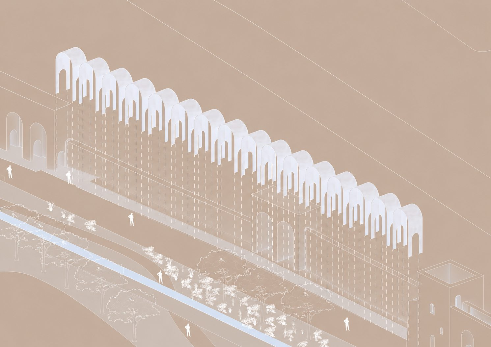
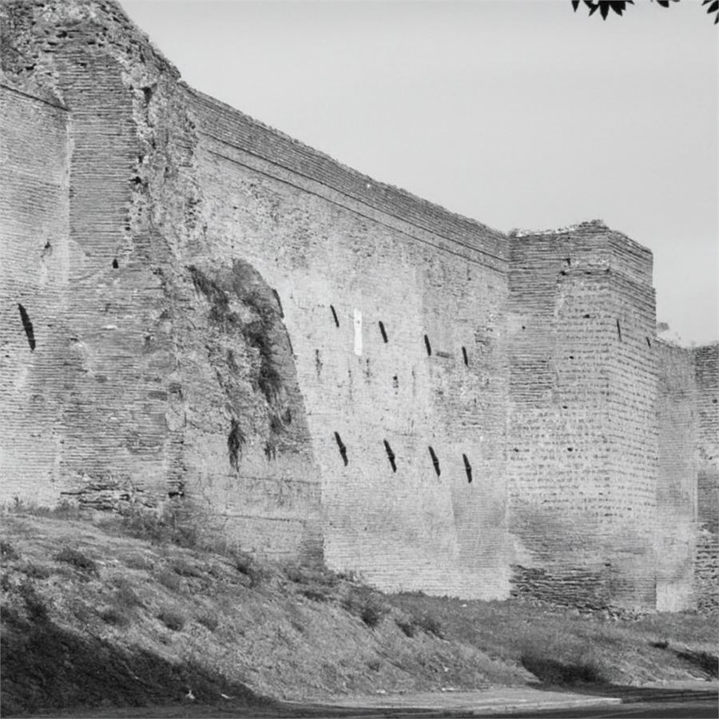
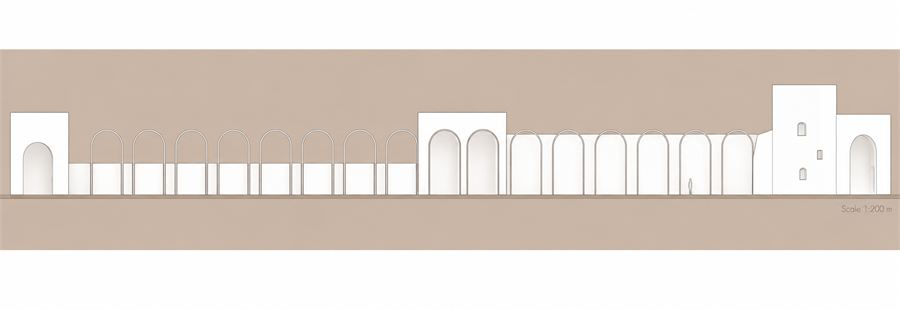
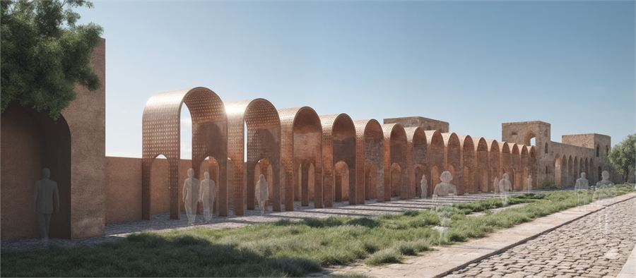

Mura Aureliane
The collapsed galleria of the Aurelian Wall, indexed rather than rebuilt.

This project focuses on indexing the collapsed sections of the galleria within the Aurelian Wall by surveying its historical evolution and current condition. Through research and design, it seeks to uncover and highlight the stories embedded in these overlooked fragments. By bringing attention to these collapsed parts, the project aims to preserve their cultural significance and reimagine their role in Rome's urban fabric.
The wall as it stands
The galleria — the covered walkway that once ran within the thickness of the wall — survives only in fragments. What remains between sections H13 and H16 is a rhythm interrupted: arches that stop, a walkway that cannot be walked.

The intervention
The design indexes the missing galleria between H13 and H16 beside Porta Metronia, abstracting its historic walkway into a minimal, modular corten steel addition that reinstates the spatial rhythm and experiential continuity of movement along the wall. Perforation enhances durability, lightness and long-term resilience without competing with the existing fabric.

